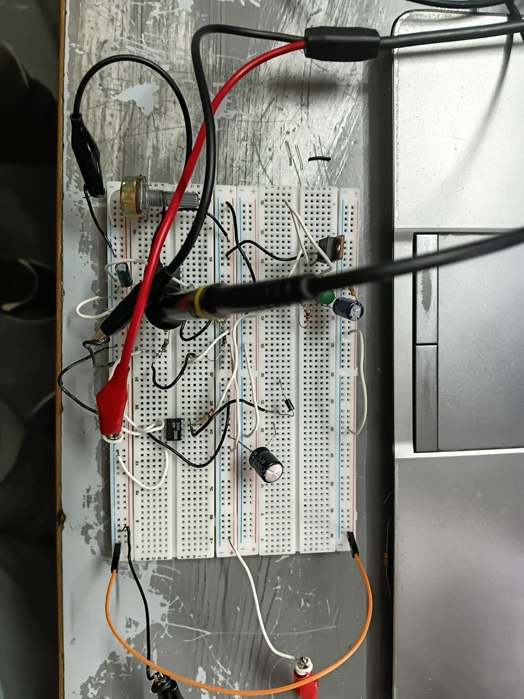
Bench photographyElectronics Bench Testing
Breadboard assembly, measurement instruments and a captured oscilloscope waveform.
Explore 3 photographs →33 project entries across embedded systems, RF & communications, signal processing, full-stack development, IoT, power electronics, and applied machine learning.
Reports document project work; repository availability does not imply a reproducible build or current hardware validation. Some engineering archives require GitHub access. EV charging and BMS share one archive; related ESP32 entries share a design archive.
Hardware notebook
Bench photographs and PCB renders. Explore the setup and design views alongside the documented projects below.

Bench photographyBreadboard assembly, measurement instruments and a captured oscilloscope waveform.
Explore 3 photographs →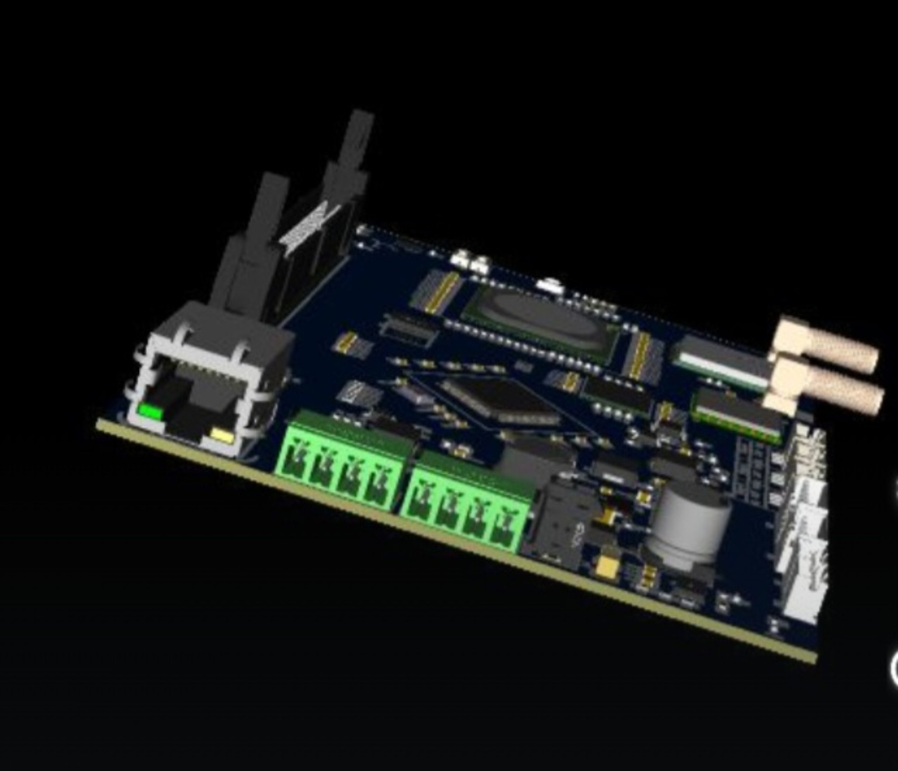
3D PCB renderTop and perspective views of the board layout. These are renders, not photographs of fabricated hardware.
Explore 2 design views →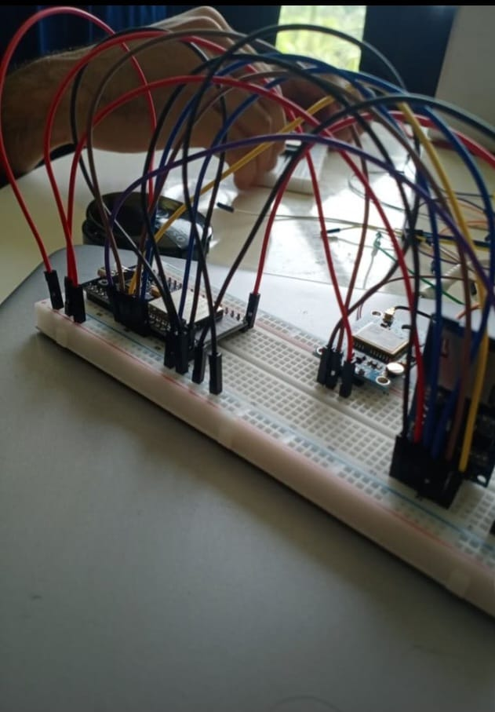
Hardware prototypeMy contribution: Integrated GPS, RFID and cellular MQTT on ESP32; built telemetry processing and Flask/SQL Server operator tools within the internship team.
Status: Documented internship prototype
Evidence & limits: The report and original bench photos document device integration and the sensor-to-dashboard workflow. Fleet-scale reliability, latency and GPS accuracy are not established here.
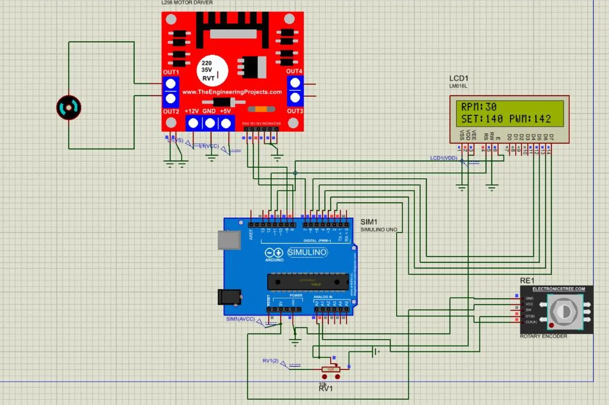
Proteus simulationMy contribution: Implemented encoder feedback, an L298N drive interface and manually tuned PID control in the documented coursework project.
Status: Documented simulation and hardware build
Evidence & limits: The project report describes the Proteus model and Arduino implementation. A reproducible measured overshoot, settling-time and load-disturbance dataset is not provided.
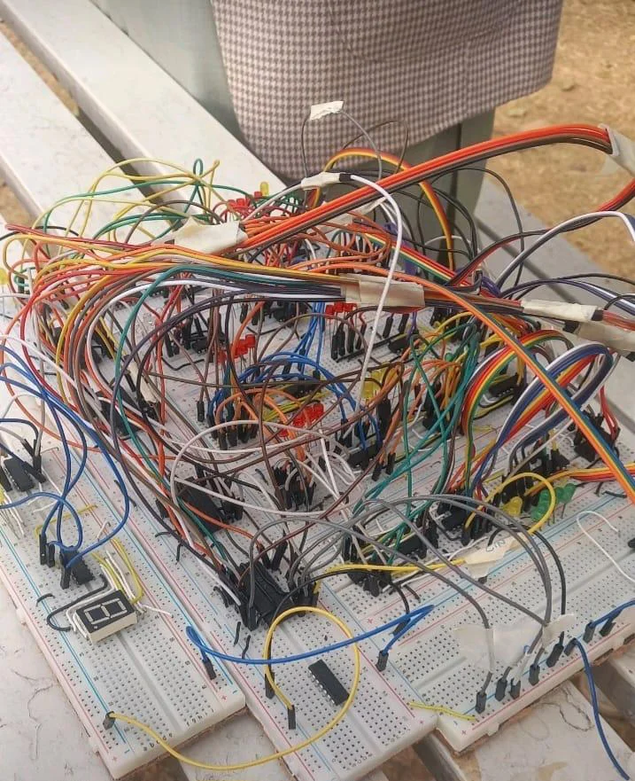
Hardware prototypeMy contribution: Designed arithmetic and logic operations with function selection and assembled the documented discrete-logic breadboard implementation.
Status: Documented digital logic build
Evidence & limits: The report and project images show the ALU implementation. An independently reproduced exhaustive truth-table test log is not included.
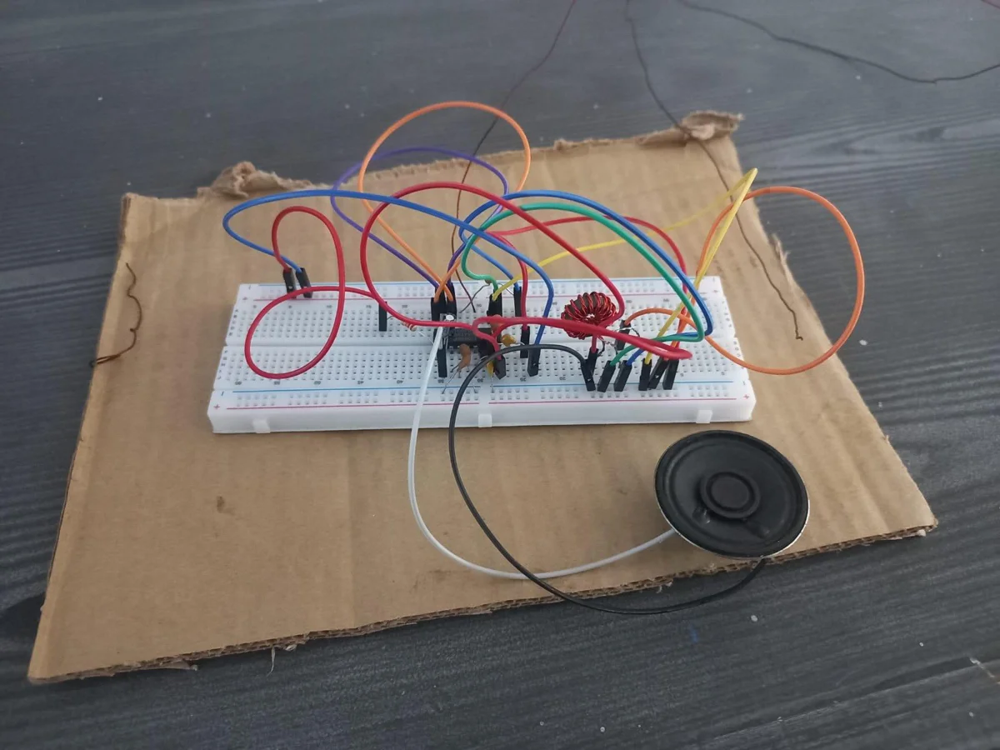
Hardware prototypeMy contribution: Worked through receiver block design, tuning-component selection, demodulation simulation and the documented physical circuit.
Status: Documented receiver project
Evidence & limits: The report covers simulation and the receiver build. Calibrated sensitivity, selectivity and signal-to-noise measurements are not published.
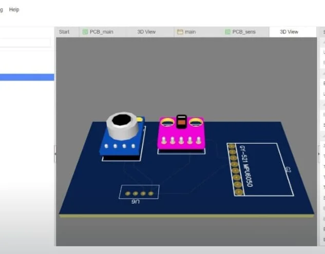
PCB renderMy contribution: Created EasyEDA schematics, board layouts and 3D views for separate ESP32 main and I2C sensor boards.
Status: PCB design archive; hardware validation pending
Evidence & limits: The available design views document board layout and component placement. Fabrication, board bring-up, noise reduction and sensor accuracy have not been verified.
Six-class bare-PCB inspection with tiled inference, annotated exports and documented evaluation. See the repository for reproducible setup and limitations.
Customer and lead operations, workflow traces, CSV utilities and a human-reviewed lead assistant. External n8n integrations require configuration.
CSV quality checks, real statistics, charts and scheduled snapshot reports. Optional Gemini explanations are clearly separated from computed-statistics mode.
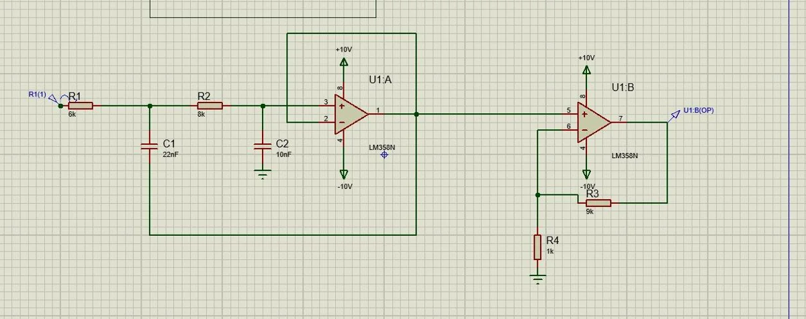
Circuit simulationDesigned a 2nd-order Butterworth active low-pass filter using op-amps and RC components. Achieves greater than 10 dB attenuation at 11.25 kHz with a flat 20 dB passband gain up to 900 Hz. Simulated first, then built and tested on hardware with results matching the simulated Bode plot.
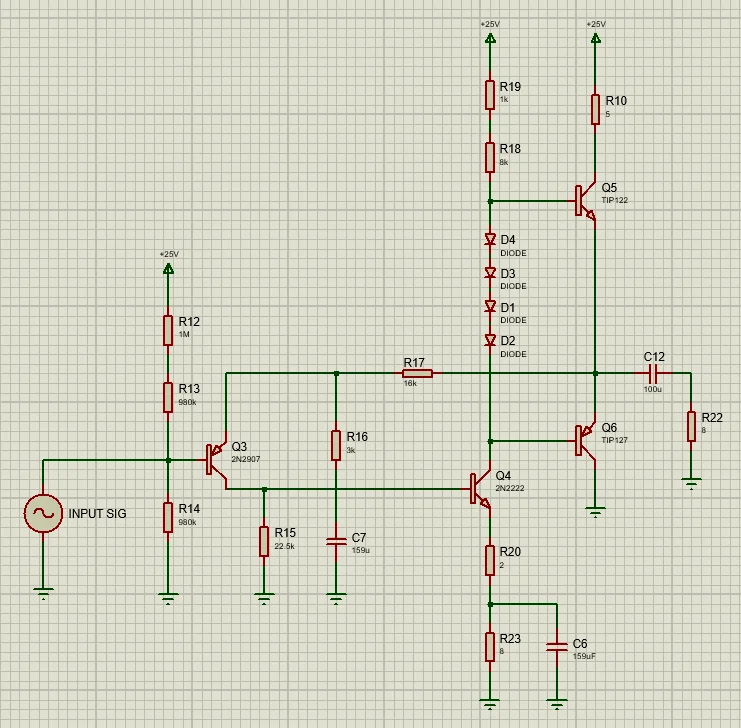
Circuit simulationMulti-stage audio amplifier chain covering preamplification, driver stage, and power output for high-fidelity reproduction across the full audible spectrum. Component values and biasing tuned to keep THD within acceptable limits, validated first in simulation then on physical hardware.
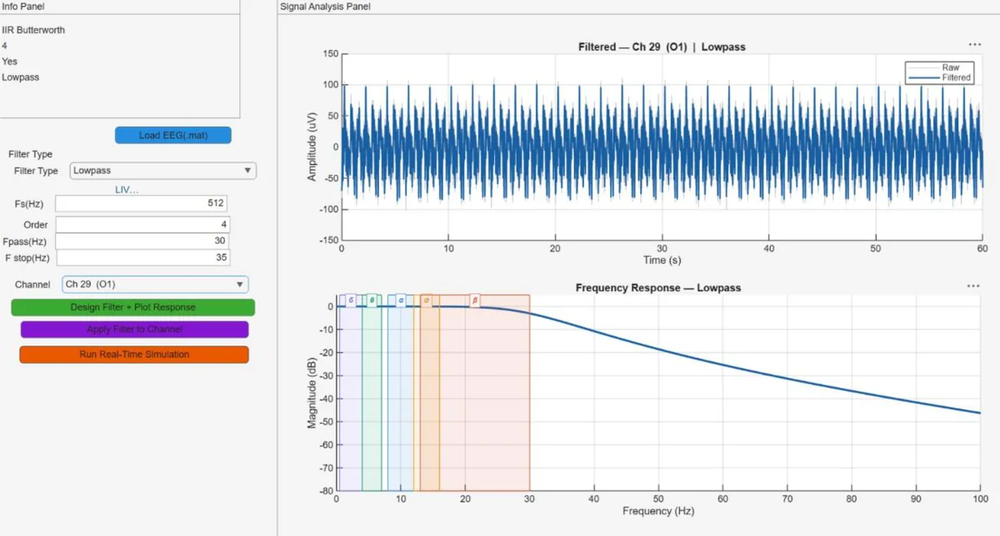
MATLAB resultsCleaned raw EEG recordings from a Parkinson's patient in MATLAB, removing 50 Hz powerline interference, EMG artifacts, eye-blink transients, and baseline drift using a cascade of notch, high-pass, and low-pass filters. Built an interactive MATLAB App Designer GUI to toggle each filter stage and visualize results in real time.
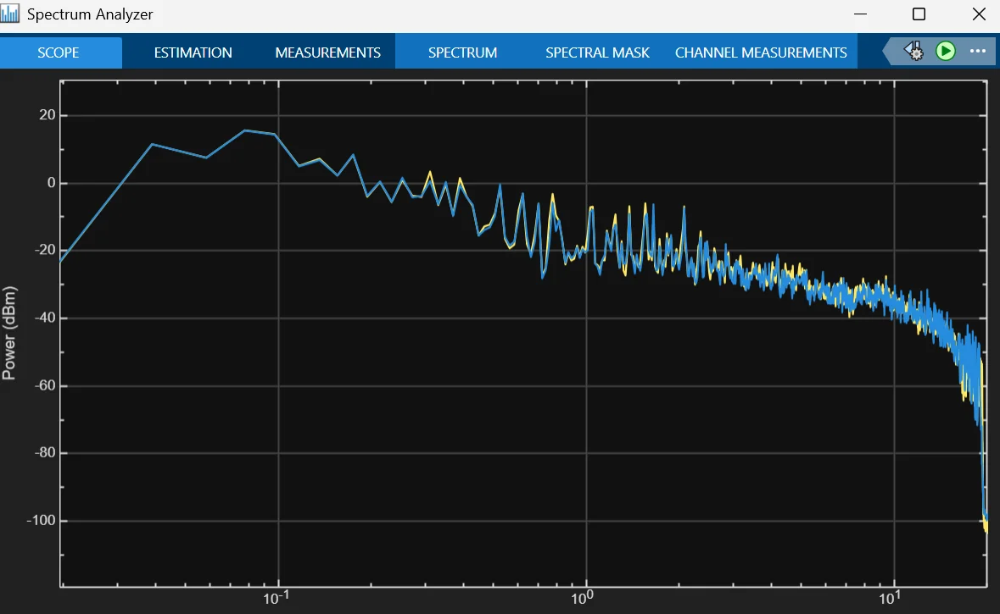
MATLAB / Simulink5-band graphic equalizer using Butterworth bandpass filters centred at standard ISO frequencies from 63 Hz to 16 kHz. Developed a Q-sweep algorithm so the combined response stays flat when all sliders are centred. Full MATLAB GUI with live playback and +/-12 dB sliders, validated against a Simulink model.
Original C++ coursework preserved alongside a modern C++17 reconstruction with category budgets, expenditure comparisons, input validation and file persistence. The reconstruction is separately labelled and tested.
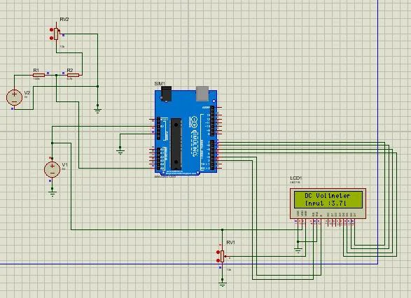
Proteus simulation3-range (2V/4V/5V) digital voltmeter using the Arduino UNO's built-in ADC with an analog multiplexer for automatic range switching. Displays values live on a 16x2 LCD with an automatic over-range alert. Demonstrates sensor interfacing, ADC calibration, and embedded measurement-system design.
Historical coursework report with a separately labelled October 2026 C++17 reconstruction. The command-line demo validates inventory, aggregates cart items, calculates discounts and tax, and saves stock after checkout. Self-tests cover totals and rejected inputs; real payment processing is not implemented.
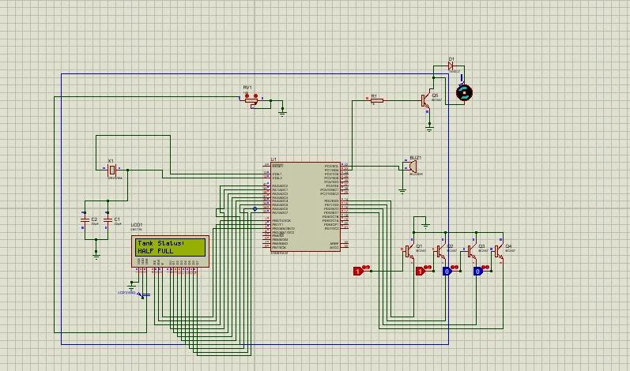
Proteus simulation4-state water level indicator (Low/Medium/High/Full) designed and simulated in Proteus using an ATmega16 microcontroller. Sensor inputs drive a bank of status LEDs and a live display, with debounced logic to avoid flickering between adjacent states.
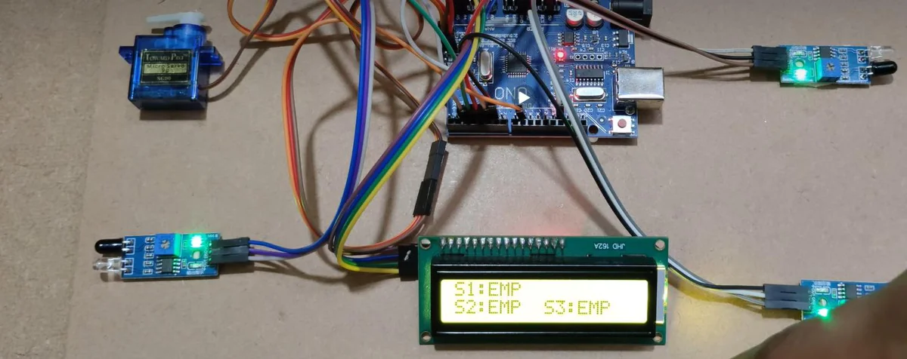
Hardware prototypeSmart parking occupancy system simulated in Proteus using IR sensors to detect whether each slot is occupied. Microcontroller logic aggregates sensor states in real time and displays live slot-availability data on an LCD.
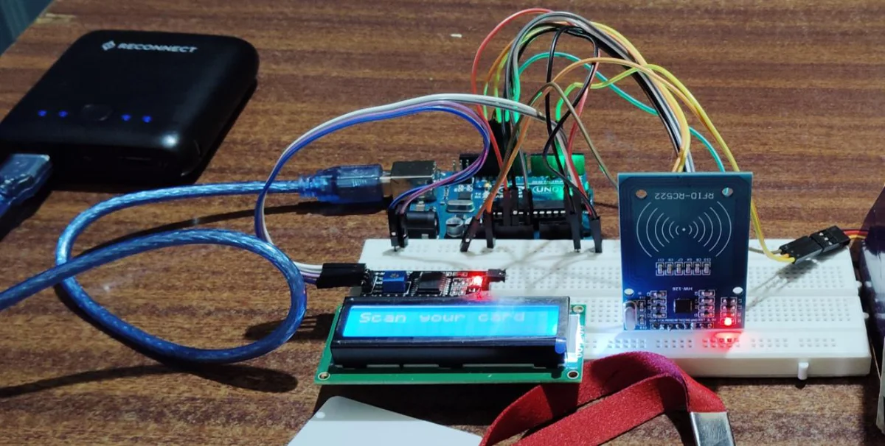
Hardware prototypeFull RFID-based access control system in Proteus ISIS using an Arduino UNO and MFRC522 reader over SPI. Authorized UIDs unlock the door via a servo-driven latch; unauthorized attempts trigger a buzzer alert. All five defined test cases passed during simulation.
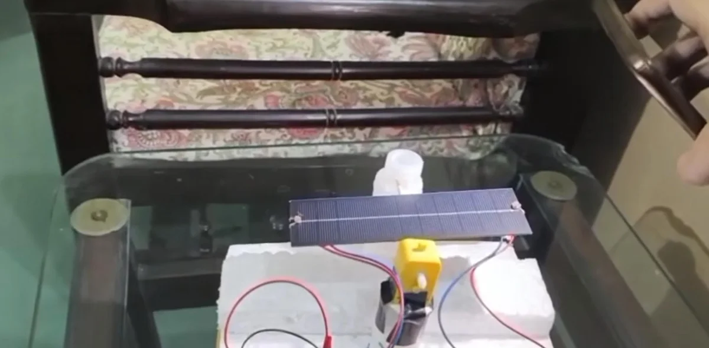
Hardware prototypeDual-axis solar tracking system in Proteus using LDR-based differential light sensing to determine the direction of strongest sunlight. Two servo motors adjust azimuth and elevation in a closed feedback loop to maximize irradiance capture throughout the day.
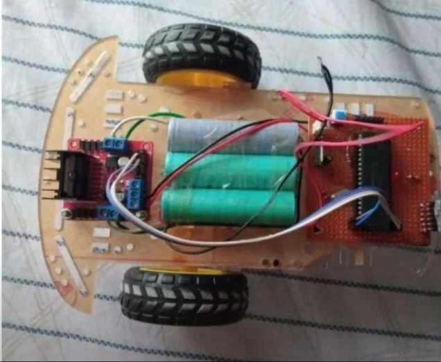
Hardware prototypeBluetooth-controlled car built from the ground up around a PIC18F877A, covering circuit simulation, firmware, and hardware assembly. An HC-05/06 module receives movement commands and passes them to the microcontroller, which drives an L293D H-bridge. Simulated in Proteus, then hand-soldered onto a chassis.
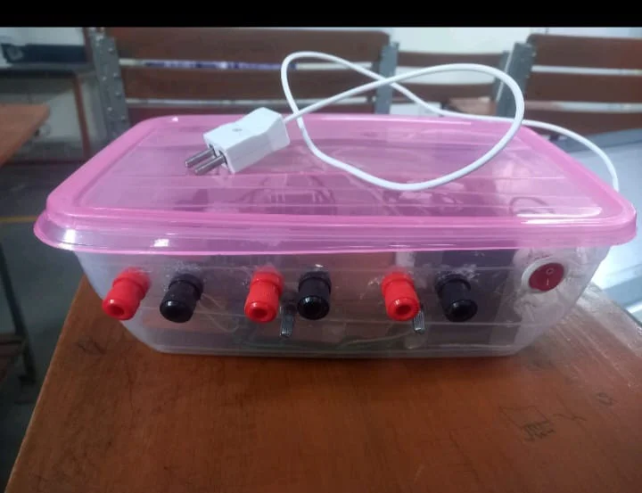
Hardware prototypeBenchtop-style DC power supply built entirely from discrete components, covering the full power conversion chain from AC mains through step-down, rectification, and regulation. Heatsinked regulation stage housed in a protective enclosure with labeled output terminals for practical bench use.
Real-time object detection system built on YOLOv8 (yolov8n and yolov8m weights), wrapped in an interactive Streamlit dashboard for live video upload, annotated playback, and detection logging. Packaged with Docker Compose for one-command deployment. Built and demoed for NUST Robotics Society's Voltfest 2026.
Advanced Metering Infrastructure style smart energy meter built around an ESP32, simulated in Proteus before hardware-prototype planning. Paired with a full-stack web dashboard for live energy-consumption monitoring, from raw sensor readings to a utility-facing view.
Credit-scoring classification model built during the CodeAlpha internship, comparing Logistic Regression, Decision Trees, and Random Forest on applicant financial-history data. Features engineered from raw records; models evaluated with Precision, Recall, F1-score, and ROC-AUC.
Convolutional Neural Network for handwritten character recognition trained on MNIST/EMNIST, built during the CodeAlpha internship. Covers the full pipeline: image preprocessing, data augmentation, model architecture design, training, and accuracy evaluation on held-out test characters.
Disease-prediction classifier on structured medical data (symptoms, age, lab results) built during the CodeAlpha internship. Compared SVM, Logistic Regression, and Random Forest to identify the model that best separated at-risk patients from healthy ones.
Backend and AI engineering practicum at FlyRank AI: built an authentication-protected CRUD API backed by a connected database, containerized the full stack with Docker, and automated a data-scraping/workflow pipeline. Applied prompt-engineering and LLM-tooling fundamentals across 21 assignments and 19 workshops.
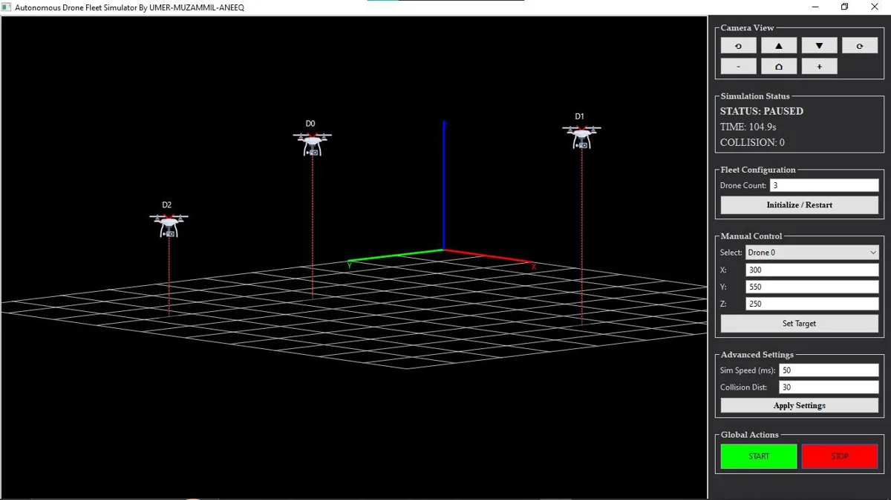
Simulation screenshotA simulation environment modeling a fleet of autonomous drones operating together, covering coordination logic, flight behavior, and fleet-level system dynamics.
Try another keyword or explore a different area.
These entries are retained for context. They are not presented as completed, validated systems.
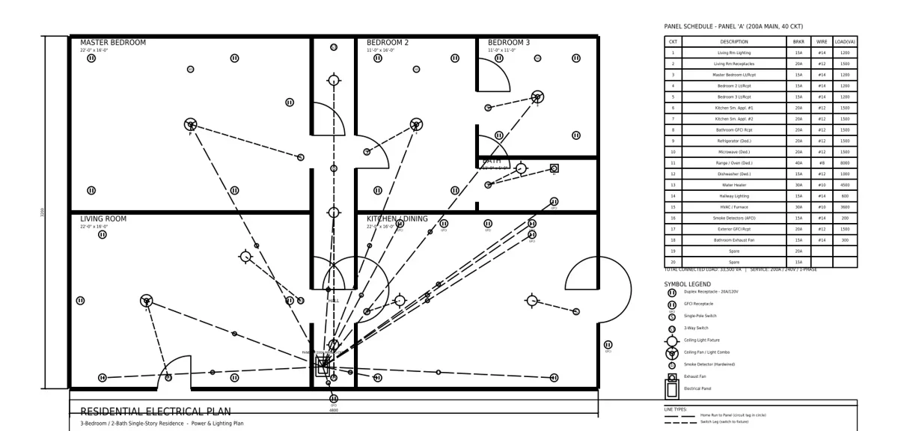
CAD drawingA collection of mechanical CAD assemblies and technical drawings produced in Fusion 360 and AutoCAD. Full design names and 3D-printing details are still being finalized.
Altium schematic and layout archive for an ESP32 USB board. Firmware, host integration and manufacturing validation are not established by the available design files.
A Battery Management System project for an electric-vehicle application, covering cell configuration, protection features, and cell balancing. Circuit and firmware specifics are being finalized.
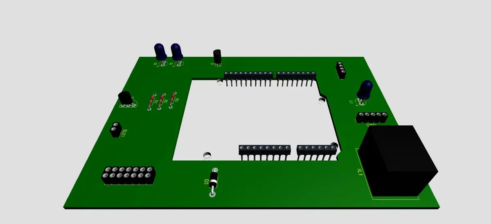
PCB renderA prototype EV charging hardware build. Charging topology, power rating, and control scheme are being finalized.
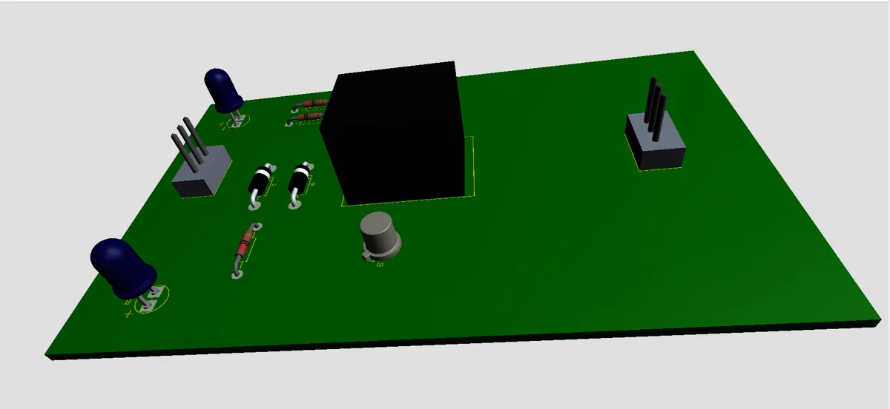
PCB renderPCB design documentation for a relay module. Switching application and design tooling are being finalized.